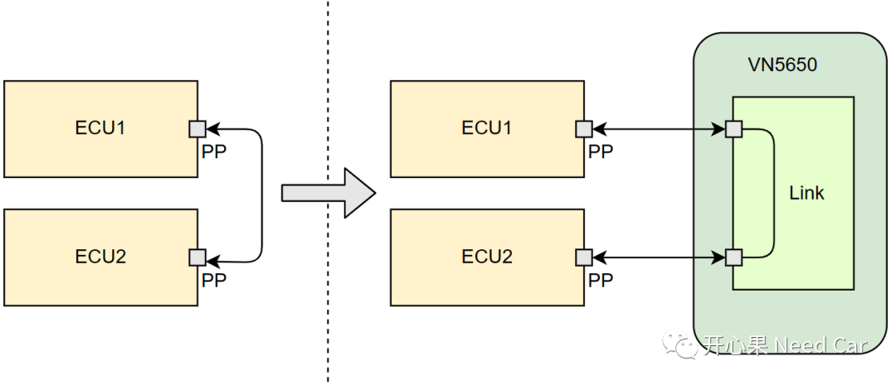
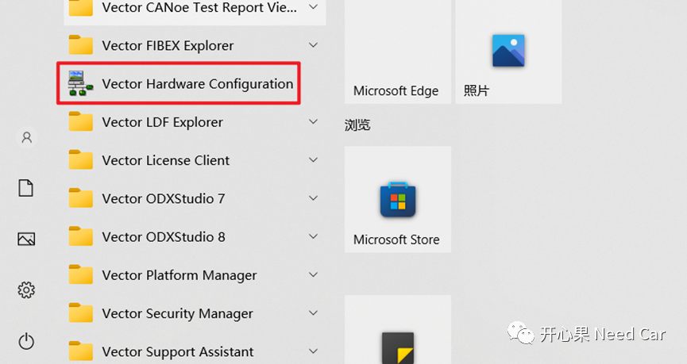
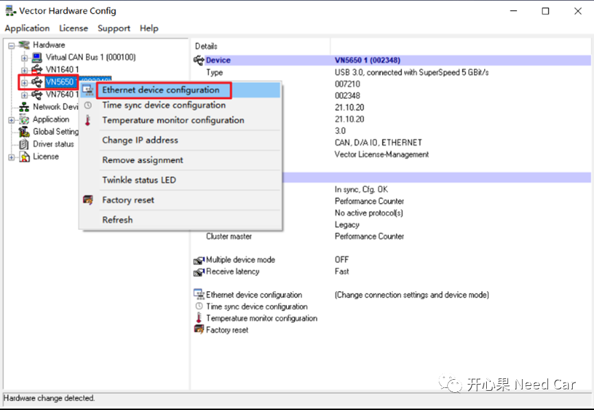
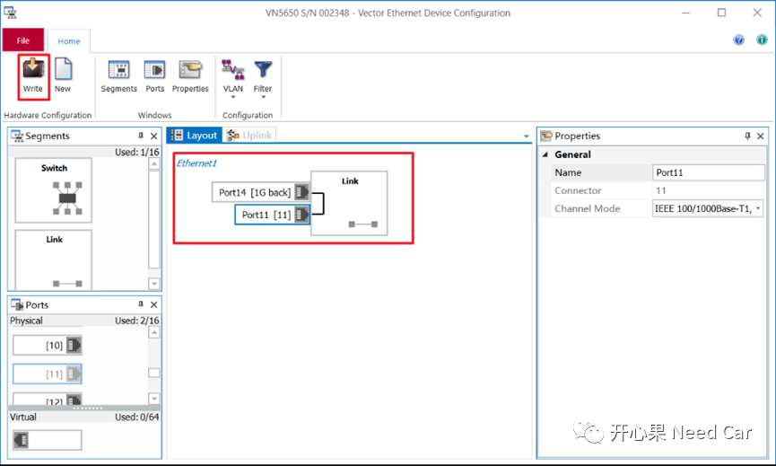
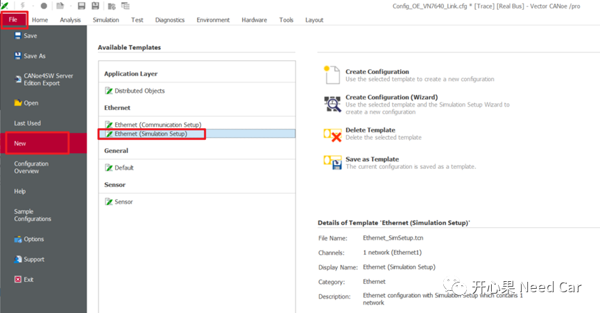
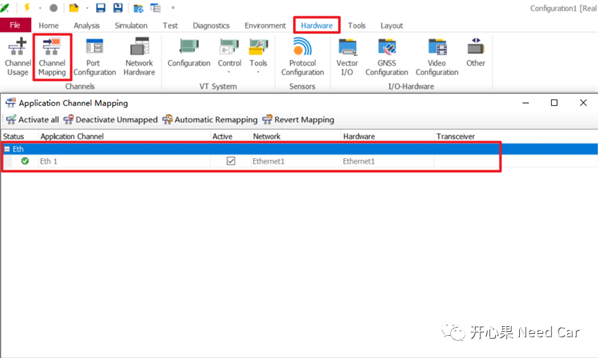
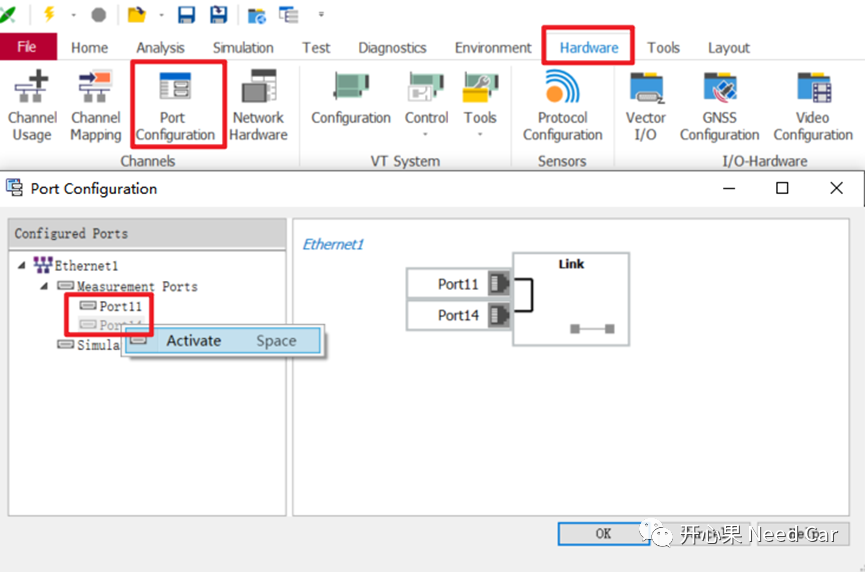
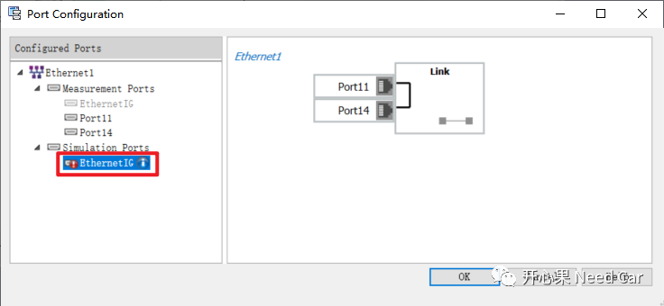
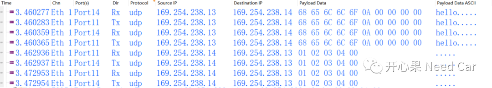

开心果 Need Car · 2023-05-21T10:04:00+08:00 · 微信原文
本文主要讨论Link Segment，Link Segment又分为Direct Connect（直连）和TAP（Bypass/旁通）两种模式。Link Segment最多只能连接两个Port，而其中一个必须为PP（Physical Port）。
一个PP和一个VP（Virtual Port）的Link Segment称为Direct Connect（直连），用于一个真实ECU节点和CANoe仿真节点（IG）通信。
1、什么是TAP
两个PP的Link Segment称为TAP（Bypass/旁通），此模式用于数据监控。以太网数据交互时，点对点通信，因此，如果使用CANoe采样两个控制器的以太网通信，需要先断开两者之间的以太网连接，使用VN5650硬件接口卡的PP分别连接控制器的PP，示意如下：

2、CANoe配置操作
（一）硬件配置
1、在开始菜单中，选择"Vector Hardware Configuration"，如下所示：








往期精彩回顾
TRACE32调试：基础调试技巧之SystemMode、SNOOPer
Bootloader开发：为什么需要SBL（Secondary Bootloader）?
Autosar EcuM：APP由RUN到POST_RUN浅析